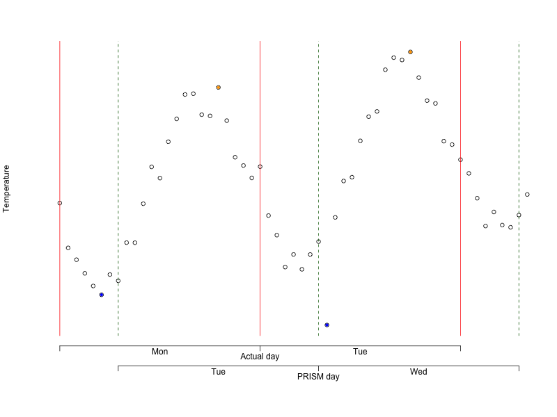

This was also posted on G-Feed.
You may not know this, but Kahlil Gibran was actually thinking about weather data when he wrote that yesterday is but today’s memory, and tomorrow is today’s dream. (Okay, not really.)
Bad literary references aside, readers of this blog know that climate economists project the impacts of climate change is by observing the relationships between historical weather realizations and economic outcomes. Fellow former ARE PhD Kendon Bell alerted me to an idiosyncrasy in one of the weather datasets we frequently use in our analyses. Since many of us (myself included) rely on high-quality daily weather data to do our work, I investigated. This post is a fairly deep dive into what I learned, so if you happen to not be interested in the minutiae of daily weather data, consider yourself warned.
The PRISM AN81-d dataset is daily minimum and maximum temperatures, precipitation, and minimum and maximum vapor pressure deficit data for the continental United States from 1981 to present. It is created by the PRISM Climate Group at Oregon State, and it is really nice. Why? It’s a gridded data product: it is composed of hundreds of thousands of 4km by 4km grid cells, where the values for each cell are determined by a complex interpolation method from weather station data (GHCN-D) that accounts for topological factors. Importantly, it’s consistent: there are no discontinuous jumps in the data (see figure below) and it’s a balanced panel: the observations are never missing.

Source: PRISM Climate Group
These benefits are well-understood, and as a result many researchers use the PRISM dataset for their statistical models. However, there is a particularity of these data that may be important to researchers making use of the daily variation in the data: most measurements of temperature maximums, and some measurements of temperature minimums, actually refer to the maximum or minimum temperature of the day before the date listed.
To understand this, you have to understand that daily climate observations are actually summaries of many within-day observations. The reported maximum and minimum temperature are just the maximum and minimum temperature observations within a given period, like a day. The tricky part is that stations define a “day” as “the 24 hours since I previously recorded the daily summary”, but not all stations record their summaries at the same time. While most U.S. stations record in the morning (i.e, “morning observers”), a hefty proportion of stations are either afternoon or evening observers. PRISM aggregates data from these daily summaries, but in order to ensure consistency tries to only incorporate morning observers. This leads to the definition of a “PRISM day”. The PRISM documentation defines a “PRISM day” as:
Station data used in AN81d are screened for adherence to a “PRISM day” criterion. A PRISM day is defined as 1200 UTC-1200 UTC (e.g., 7 AM-7AM EST), which is the same as the [the National Weather Service’s hydrologic day]. Once-per day observation times must fall within +/- 4 hours of the PRISM day to be included in the AN81d tmax and tmin datasets. Stations without reported observation times in the NCEI GHCN-D database are currently assumed to adhere to the PRISM day criterion. The dataset uses a day-ending naming convention, e.g., a day ending at 1200 UTC on 1 January is labeled 1 January.
This definition means that generally only morning observers should be included in the data. The last sentence is important: because a day runs from 4am-4am PST (or 7am-7am EST) and because days are labeled using the endpoint of that time period, most of the observations from which the daily measures are constructed for a given date are taken from the day prior. A diagram may be helpful here:

The above is a plot of temperature over about two days, representing a possible set of within-day monitor data. Let’s say that this station takes a morning reading at 7am PST (10am EST), meaning that this station would be included in the PRISM dataset. The top x-axis is the actual date, while the bottom x axis shows which observations are used under the PRISM day definition. The red lines are actual midnights, the dark green dotted line is the PRISM day definition cutoff and the orange (blue) dots in the diagram are the observations that represent the true maximums (minimums) of that calendar day. Because of the definition of a PRISM day, the maximum temperatures (“tmax”s from here on out) given for Tuesday and Wednesday (in PRISM) are actually observations recorded on Monday and Tuesday, respectively. On the other hand, the minimum temperatures (“tmin”s) given for Tuesday (in PRISM) is actually drawn from Tuesday, but the tmin given for Wednesday (in PRISM) is also from Tuesday.
To see this visually, I pulled the GHCN data and plotted a histogram of the average reporting time by station for the stations that report observation time (66% in the United States). The histogram below shows the average observation time by stations for all GHCN-D stations in the continental United States in UTC, colored by whether or not they would be included in PRISM according to the guidelines given above.

This confirms what I asserted above: most, but not all, GHCN-D stations are morning observers, and the PRISM day definition does a good job capturing the bulk of that distribution. On average, stations fulfilling the PRISM criterion report at 7:25am or so.
The next step is to look empirically at how many minimum and maximum temperature observations are likely to fall before or after the observation time cutoff. To do that, we need some raw weather station data, which I pulled from NOAA’s Quality Controlled Local Climatological Data (QCLCD). To get a sense for which extreme temperatures would be reported as occurring on the actual day they occurred, I assumed that all stations would report at 7:25am, the average observation time in the PRISM dataset. The next two figures show histograms of observed maximum and minimum temperatures.


I’ve colored the histograms so that all extremes (tmins and tmaxes) after 7:25am are red, indicating that extremes after that time will be reported as occurring during the following day. As expected, the vast majority of tmaxes (>94%) occur after 7:25am. But surprisingly, a good portion (32%) of tmins do as well. If you’re concerned about the large number of minimum temperature observations around midnight, remember that a midnight-to-midnight summary is likely to have this sort of “bump”, since days with a warmer-than-usual morning and a colder-than-usual night will have their lowest temperature at the end of the calendar day.
As a more direct check, I compared PRISM leads of tmin and tmax to daily aggregates (that I computed using a local calendar date definition) of the raw QCLCD data described above. The table below shows the pairwise correlations between the PRISM day-of observations, leads (next day), and the QCLCD data for both maximum and minimum daily temperature.
| Measure | PRISM day-of | PRISM lead |
|---|---|---|
| tmin (calendar) | 0.962 | 0.978 |
| tmax (calendar) | 0.934 | 0.992 |
As you can see, the the PRISM leads, i.e., observations from the next day, correlated more strongly with my aggregated data. The difference was substantial for tmax, as expected. The result for tmin is surprising: it also correlates more strongly with the PRISM tmin lead. I’m not quite sure what to make of this - it may be that the stations who fail to report their observation times and the occasions when the minimum temperature occurs after the station observation time are combining to make the lead of tmin correlate more closely with the local daily summaries I’ve computed. But I’d love to hear other explanations.
So who should be concerned about this? Mostly, researchers with econometric models that use daily variation in temperature on the right-hand side, and fairly high frequency variables on the left-hand side. The PRISM group isn’t doing anything wrong, and I’m sure that folks who specialize in working with weather datasets are very familiar with this particular limitation. Their definition matches a widely used definition of how to appropriately summarize daily weather observations, and presumably they’ve thought carefully about the consequences of this definition and of including more data from stations who don’t report their observation times. But researchers who, like me, are not specialists in using meteorological data and who, like me, use PRISM to examine at daily relationships between weather and economics outcomes, should tread carefully.
As is, using the PRISM daily tmax data amounts to estimating a model that includes lagged rather than day-of temperature. A quick fix, particularly for models that include only maximum temperature, is to simply use the leads, or the observed weather for the next day, since it will almost always reflect the maximum temperature for the day of interest. A less-quick fix is to make use of the whole distribution using the raw monitor data, but then you would lose the nice gridded quality of the PRISM data. Models with average or minimum temperature should, at the very least, tested for robustness with the lead values. Let’s all do Gibran proud.